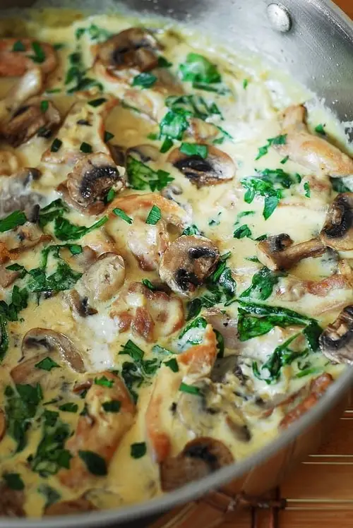

Chicken and Spinach in Creamy Mushroom Sauce

Chicken and Spinach in Creamy Parmesan Mushroom Sauce is
your perfect comfort food as well as an easy midweek dinner
(you can also use leftovers for lunch). Using boneless and
skinless chicken thighs guarantees juicy and tender result.
Ingredients
Chicken and Mushrooms
- 2 tablespoon olive oil
- 4 boneless skinless chicken thighs, (thinly sliced)
- 10 oz mushrooms, (1 package)
- Salt and pepper to taste
Creamy Parmesan Sauce
- 4 tablespoon butter
- 4 cloves garlic, minced
- 1 tablespoon flour
- ½ cup chicken broth
- 1 cup half and half
- ½ cup grated Parmesan cheese
- ½ teaspoon salt
- 1 cup spinach
Steps
- Chicken and mushrooms: In a large skillet, add olive oil and heat it over medium high heat. When the pan is hot, add chicken and cook for about 5 minutes on each side until browned. Season chicken with salt and pepper right inside the pan. Remove it onto a plate and add the sliced mushrooms in. Add in salt. In about 5 more minutes, your mushrooms should look nice and moist, and dark. Once cooked, remove them from the pan. I put them on the same plate as the cooked chicken strips.
- Sauce: To make the sauce, add butter to the pan, allow it to melt and then cook garlic in it until slightly browned – only for a couple of minutes. Add 1 tablespoon flour (omit flour if you like your sauce to be a little more runny). Slowly add chicken broth, half-and-half and Parmesan cheese. All these will blend in very quickly.
- Add salt slowly and taste the sauce to make sure the salt level is to your liking.
- Spinach: Add spinach to the sauce and allow it to wilt. I added 1 cup of spinach, but you can certainly add more or less depending on your preference.
- Putting it all together: Add the chicken and mushrooms back into the pan and mix in well. Serve warm and garnish it with parsley, if desired.
- Eat as is, or serve along pasta or rice.
Return to Main Page